Filtering of chromatographic peaks in an XCMS object
Kristian Pirttilä
2022-01-12
cpc.RmdIntroduction
This tutorial describes the CPC package functionality on an example data set included with the package. We will load the example dataset, perform peak picking using XCMS and apply the CPC algorithm to filter the peaks detected. Furthermore, we will showcase the data extraction methods and visualize the results.
The data originates from 4 replicate injections of protein precipitated plasma on a HILIC platform. The example data is heavily filtered in order to keep package size and processing times to a minimum. The filtering is made in two steps: (1) The full data set was processed using XCMS and CPC in the same way described below. A subset of 100 peaks was randomly selected from those that were retained in the filtering step, based on the calculated signal-to-noise of the peaks (25 from each quartile). Similarily 100 peaks were randomly selected from those removed in the filtering step (33-34 each from those removed due to not being detected, having too low signal to noise, or having too few data points along the peak range). (2) The data set was then filtered to (i) only include scan indices 1-1200, (ii) only include mass peaks with intensity > 2.225*median intensity (removes a lot of noise peaks), and (iii) include only mass peaks whose m/z value coincide with one of the selected peaks in step (1) within a ppm value of 50 and a retention window of +/- 120 seconds.
XCMS processing
The first step in this tutorial is to use XCMS to process the reduced data set. This step normally takes a long time to run on a full dataset, however, thanks to the significant filtering made, it should run very fast on an average desktop PC. For more information on how to use XCMS for processing LC/MS data, see XCMS documentation. Only the peak picking will be performed as the retention alignment will not work properly with this heavily filtered dataset, and is not important to illustrate the workflow.
# get example raw data file paths from package
fp_raw <- list.files(system.file("extdata", package = "cpc"), full.names = T)
# setup multi-core processing for XCMS
register(bpstart(SnowParam()))
# setup metadata
(pd <- data.frame(sample_name = paste0("HILIC_", seq(1,4,1)),
sample_group = rep("HILIC_POS", 4),
stringsAsFactors = F))
#> sample_name sample_group
#> 1 HILIC_1 HILIC_POS
#> 2 HILIC_2 HILIC_POS
#> 3 HILIC_3 HILIC_POS
#> 4 HILIC_4 HILIC_POS
# Create raw data object
(msraw <- MSnbase::readMSData(files = fp_raw,
pdata = new("NAnnotatedDataFrame", pd),
mode = "onDisk", msLevel. = 1, centroided. = T))
#> MSn experiment data ("OnDiskMSnExp")
#> Object size in memory: 1.54 Mb
#> - - - Spectra data - - -
#> MS level(s): 1
#> Number of spectra: 5200
#> MSn retention times: 0:02 - 11:18 minutes
#> - - - Processing information - - -
#> Data loaded [Sat May 14 18:36:03 2022]
#> Filter: select MS level(s) 1. [Sat May 14 18:36:03 2022]
#> MSnbase version: 2.20.4
#> - - - Meta data - - -
#> phenoData
#> rowNames: 1 2 3 4
#> varLabels: sample_name sample_group
#> varMetadata: labelDescription
#> Loaded from:
#> [1] hilic015.mzML... [4] hilic021.mzML
#> Use 'fileNames(.)' to see all files.
#> protocolData: none
#> featureData
#> featureNames: F1.S0001 F1.S0002 ... F4.S1300 (5200 total)
#> fvarLabels: fileIdx spIdx ... spectrum (35 total)
#> fvarMetadata: labelDescription
#> experimentData: use 'experimentData(object)'
# --- PEAK DETECTION ---
# run peak detection
xd <- xcms::findChromPeaks(msraw,
param = xcms::CentWaveParam(ppm = 60,
peakwidth = c(5, 50),
fitgauss = T,
noise = 200,
integrate = 2,
prefilter = c(5, 1000),
verboseColumns = T,
mzdiff = 0.01),
msLevel = 1L)
#>
#> Attaching package: 'BiocGenerics'
#>
#> The following objects are masked from 'package:stats':
#>
#> IQR, mad, sd, var, xtabs
#>
#> The following objects are masked from 'package:base':
#>
#> anyDuplicated, append, as.data.frame, basename, cbind, colnames,
#> dirname, do.call, duplicated, eval, evalq, Filter, Find, get, grep,
#> grepl, intersect, is.unsorted, lapply, Map, mapply, match, mget,
#> order, paste, pmax, pmax.int, pmin, pmin.int, Position, rank,
#> rbind, Reduce, rownames, sapply, setdiff, sort, table, tapply,
#> union, unique, unsplit, which.max, which.min
#>
#> Welcome to Bioconductor
#>
#> Vignettes contain introductory material; view with
#> 'browseVignettes()'. To cite Bioconductor, see
#> 'citation("Biobase")', and for packages 'citation("pkgname")'.
#>
#>
#> Attaching package: 'S4Vectors'
#>
#> The following objects are masked from 'package:base':
#>
#> expand.grid, I, unname
#>
#>
#> Attaching package: 'ProtGenerics'
#>
#> The following object is masked from 'package:stats':
#>
#> smooth
#>
#>
#> This is MSnbase version 2.20.4
#> Visit https://lgatto.github.io/MSnbase/ to get started.
#>
#>
#> Attaching package: 'MSnbase'
#>
#> The following object is masked from 'package:base':
#>
#> trimws
#>
#>
#> This is xcms version 3.16.1
#>
#>
#> Attaching package: 'xcms'
#>
#> The following object is masked from 'package:stats':
#>
#> sigma
#>
#> Detecting mass traces at 60 ppm ... OK
#> Detecting chromatographic peaks in 1837 regions of interest ... OK: 268 found.
#> Detecting mass traces at 60 ppm ... OK
#> Detecting chromatographic peaks in 1774 regions of interest ... OK: 296 found.
#> Detecting mass traces at 60 ppm ... OK
#> Detecting chromatographic peaks in 1782 regions of interest ... OK: 264 found.
#> Detecting mass traces at 60 ppm ... OK
#> Detecting chromatographic peaks in 1768 regions of interest ... OK: 282 found.
print(xd)
#> MSn experiment data ("XCMSnExp")
#> Object size in memory: 1.54 Mb
#> - - - Spectra data - - -
#> MS level(s): 1
#> Number of spectra: 5200
#> MSn retention times: 0:02 - 11:18 minutes
#> - - - Processing information - - -
#> Data loaded [Sat May 14 18:36:03 2022]
#> Filter: select MS level(s) 1. [Sat May 14 18:36:03 2022]
#> MSnbase version: 2.20.4
#> - - - Meta data - - -
#> phenoData
#> rowNames: 1 2 3 4
#> varLabels: sample_name sample_group
#> varMetadata: labelDescription
#> Loaded from:
#> [1] hilic015.mzML... [4] hilic021.mzML
#> Use 'fileNames(.)' to see all files.
#> protocolData: none
#> featureData
#> featureNames: F1.S0001 F1.S0002 ... F4.S1300 (5200 total)
#> fvarLabels: fileIdx spIdx ... spectrum (35 total)
#> fvarMetadata: labelDescription
#> experimentData: use 'experimentData(object)'
#> - - - xcms preprocessing - - -
#> Chromatographic peak detection:
#> method: centWave
#> 1110 peaks identified in 4 samples.
#> On average 278 chromatographic peaks per sample.CPC peak filtering
The way in which the CPC package is applied to the workflow is via two wrapper functions, characterize_peaklist() and filter_xcms_peaklist(). The first one will only characterize the peaks detected by XCMS and returns a cpc object, whereas the second will call characterize_peaklist() as well as run the filtering method and can return either a cpc object containing all the information, including the filtered XCMSnExp object, or only the filtered XCMSnExp object. For incorporating the package into an XCMS workflow, it is recommended to use the function filter_xcms_peaklist() with return_type = “xcms” or use the getFilteredXCMS() method on the cpc object returned by filter_xcms_peaklist() as both cases will give the same result. The latter case will be used in this tutorial as we want to keep the information contained in the cpc object.
The cpcProcParam object holds processing parameters for both peak characterization as well as peak filtering.
cpc <- cpc::filter_xcms_peaklist(xd = xd, return_type = "cpc",
param = cpc::cpcProcParam(min_sn = 10,
min_pts = 10,
min_intensity = 2000))
#> Processing file: /__w/_temp/Library/cpc/extdata/hilic015.mzML
#> Found 268 peak(s).
#> Finished in 5.274 secs.
#> Processing file: /__w/_temp/Library/cpc/extdata/hilic017.mzML
#> Found 296 peak(s).
#> Finished in 5.678 secs.
#> Processing file: /__w/_temp/Library/cpc/extdata/hilic019.mzML
#> Found 264 peak(s).
#> Finished in 5.13 secs.
#> Processing file: /__w/_temp/Library/cpc/extdata/hilic021.mzML
#> Found 282 peak(s).
#> Finished in 5.36 secs.
#> Keeping 923 of 1110 (83.15%) peaks.Processing times will depend heavily on the computer hardware used. With this data set the processing times are very fast (<10 seconds per file), but that is due to the heavy filtering that has been done. More realistic processing times, when working with full LC/MS data sets, range from a 2-10 minutes per file, scaling linearly with the number of peaks detected by XCMS.
After processing we can get the original peak table from the XCMS object and the characterized peak table from the CPC object using the methods cpt and getPeaklist.
cpcPeaktable <- cpc::cpt(cpc)The peak table that you get from the CPC package has a number of determined peak characteristics as well as calculated peak characteristics.
| Column | Description |
|---|---|
| id | The row number of the peak in the original peak table from XCMS. |
| rt | Peak retention time in seconds. |
| rtmin | Peak front bound in seconds. |
| rtmax | Peak tail bound in seconds. |
| rtf1b | Peak front bound at 1% peak height. |
| rtt1b | Peak tail bound at 1% peak height. |
| rtf5b | Peak front bound at 5% peak height. |
| rtt5b | Peak tail bound at 5% peak height. |
| rtf10b | Peak front bound at 10% peak height. |
| rtt10b | Peak tail bound at 10% peak height. |
| rtf50b | Peak front bound at 50% peak height. |
| rtt50b | Peak tail bound at 50% peak height. |
| apex | The most intense scan point in the peak. |
| finf | The interpolated front inflection point of the peak where the second derivative crosses zero. |
| tinf | The interpolated tail inflection point of the peak where the second derivative crosses zero. |
| fblb | The determined front baseline boundary scan. |
| tblb | The determined tail baseline boundary scan. |
| fpkb | The determined front peak bound. |
| tpkb | The determined tail peak bound. |
| fcode | The front peak bound type (B = baseline, V = valley, S = shoulder, R = rounded peak). |
| tcode | The tail peak bound type (B = baseline, V = valley, S = shoulder, R = rounded peak). |
| blslp | The slope of the baseline calculated between fblb and tblb. |
| emu | The mu value of the fitted exponentially modified gaussian (EMG) function. This is only calculated if EMG deconvolution is turned on. |
| esigma | The sigma value of the fitted EMG function. This is only calculated if EMG deconvolution is turned on. |
| elambda | The lambda value of the fitted EMG function. This is only calculated if EMG deconvolution is turned on. |
| earea | The area modifier of the fitted EMG function. This is only calculated if EMG deconvolution is turned on. |
| econv | An indicator if the Nelder-Mead minimizer converged when performing EMG deconvolution. |
| note | A character statement describing the result of the peak processing. This can be “detected”, “not_detected”, “too_narrow”, “low_sn”, “too_small”. |
| height | The peak height calculated between the apex scan point and the interpolated baseline value at that point. |
| fh1b | Front bound at 1% peak height. |
| th1b | Tail bound at 1% peak height. |
| fh5b | Front bound at 5% peak height. |
| th5b | Tail bound at 5% peak height. |
| fh50b | Front bound at 50% peak height. |
| th50b | Tail bound at 50% peak height. |
| wb | Base width of the peak calculated as th5b-fh5b. |
| fwhm | Full width at half maxima of the peak calculated as th50b-fh50b. |
| area | The area of the peak calculated using a trapezoid integrator between fh1b and th1b. |
| a | apex - fpkb. Used to calculate the tailing factor. |
| b | tpkb - apex. Used to calculate the tailing factor. |
| tf | The tailing factor calculated as tf = b/a. |
| sn | The calculated signal-to-noise ratio calculated as sn = 2**height*/noise. |
| file | Which sample file the peak was detected in. |
| exectime | The execution time for the peak in seconds. |
Visualizing the results
First lets determine which peaks are kept and which are filtered. In the cpc object, there are two XCMSnExp objects, xd and xdFilt. xdFilt, as the name implies, is the filtered XCMSnExp object. It can be extracted using the filteredObject() method.
# get the original xcms object using getOriginalXCMS()
xdOrig <- cpc::getOriginalXCMS(cpc)
xdOrig
#> MSn experiment data ("XCMSnExp")
#> Object size in memory: 1.54 Mb
#> - - - Spectra data - - -
#> MS level(s): 1
#> Number of spectra: 5200
#> MSn retention times: 0:02 - 11:18 minutes
#> - - - Processing information - - -
#> Data loaded [Sat May 14 18:36:03 2022]
#> Filter: select MS level(s) 1. [Sat May 14 18:36:03 2022]
#> MSnbase version: 2.20.4
#> - - - Meta data - - -
#> phenoData
#> rowNames: 1 2 3 4
#> varLabels: sample_name sample_group
#> varMetadata: labelDescription
#> Loaded from:
#> [1] hilic015.mzML... [4] hilic021.mzML
#> Use 'fileNames(.)' to see all files.
#> protocolData: none
#> featureData
#> featureNames: F1.S0001 F1.S0002 ... F4.S1300 (5200 total)
#> fvarLabels: fileIdx spIdx ... spectrum (35 total)
#> fvarMetadata: labelDescription
#> experimentData: use 'experimentData(object)'
#> - - - xcms preprocessing - - -
#> Chromatographic peak detection:
#> method: centWave
#> 1110 peaks identified in 4 samples.
#> On average 278 chromatographic peaks per sample.
# get the original peak table
xcmsPeaktableOrig <- data.frame(xcms::chromPeaks(xdOrig))
# get the filtered xcms object using getFilteredXCMS()
xdFilt <- cpc::getFilteredXCMS(cpc)
xdFilt
#> MSn experiment data ("XCMSnExp")
#> Object size in memory: 1.54 Mb
#> - - - Spectra data - - -
#> MS level(s): 1
#> Number of spectra: 5200
#> MSn retention times: 0:02 - 11:18 minutes
#> - - - Processing information - - -
#> Data loaded [Sat May 14 18:36:03 2022]
#> Filter: select MS level(s) 1. [Sat May 14 18:36:03 2022]
#> MSnbase version: 2.20.4
#> - - - Meta data - - -
#> phenoData
#> rowNames: 1 2 3 4
#> varLabels: sample_name sample_group
#> varMetadata: labelDescription
#> Loaded from:
#> [1] hilic015.mzML... [4] hilic021.mzML
#> Use 'fileNames(.)' to see all files.
#> protocolData: none
#> featureData
#> featureNames: F1.S0001 F1.S0002 ... F4.S1300 (5200 total)
#> fvarLabels: fileIdx spIdx ... spectrum (35 total)
#> fvarMetadata: labelDescription
#> experimentData: use 'experimentData(object)'
#> - - - xcms preprocessing - - -
#> Chromatographic peak detection:
#> method: centWave
#> 923 peaks identified in 4 samples.
#> On average 231 chromatographic peaks per sample.
# get the filtered peak table
xcmsPeaktableFilt <- data.frame(xcms::chromPeaks(xdFilt))
# get the filtered cpc peak table
cpcPeaktableFilt <- cpcPeaktable[row.names(xcmsPeaktableFilt), ]In the original XCMS object there were 1110 peaks identified across 4 files. After filtering using our processing, 913 peaks remain.
To see how many peaks were removed in a file-by-file basis you can use the table function on the chromatographic peak table from the xcms object.
rbind(Original = table(xcmsPeaktableOrig[, "sample"]),
Filtered = table(xcmsPeaktableFilt[, "sample"]),
PercentKept = round(100*table(xcms::chromPeaks(xdFilt)[, "sample"]) /
table(xcms::chromPeaks(xdOrig)[, "sample"]), 1))
#> 1 2 3 4
#> Original 268.0 296.0 264.0 282.0
#> Filtered 226.0 238.0 221.0 238.0
#> PercentKept 84.3 80.4 83.7 84.4The filtering outcomes can be extracted from the object using the getFilterOutcomes() method. This returns a data.frame indicating if a peak passed the filter criteria or not for the different filter characteristics.
outcomes <- cpc::getFilterOutcomes(cpc)
head(outcomes)
#> detected sn width fwhm tf intensity
#> CP0001 TRUE FALSE FALSE TRUE TRUE TRUE
#> CP0002 TRUE TRUE TRUE TRUE TRUE TRUE
#> CP0003 TRUE TRUE TRUE TRUE TRUE TRUE
#> CP0004 TRUE TRUE TRUE TRUE TRUE TRUE
#> CP0005 TRUE TRUE TRUE TRUE TRUE TRUE
#> CP0006 TRUE TRUE TRUE TRUE TRUE TRUEIn the example presented here we have the peak width, peak area, and signal-to-noise ratio filters active. For that reason the other filters just show TRUE for all peaks as they were not filtered based on this.
To check which peaks are retained and which are removed, the outcomes data.frame can be used. A character vector of removed and retained peak IDs can also be obtained using the getRemovedPeaks() and getRetainedPeaks() methods, respectively. We can visualize the filtering outcomes using a Venn diagram.
# setup a list for the Venn diagram
outcomesList <- lapply(outcomes, function(x) which(!x))
# output a Venn diagram for the used filters
ggvenn::ggvenn(data = outcomesList[c(1, 2, 3, 6)], show_percentage = FALSE,
stroke_size = 0.5, set_name_size = 4, text_size = 2.8,
fill_color = c("#868686FF", "#0073C2FF", "#CD534CFF",
"#EFC000FF", "#073b4cFF"))
#> Warning in sprintf("%d", n, 100 * n/sum(n)): one argument not used by format
#> '%d'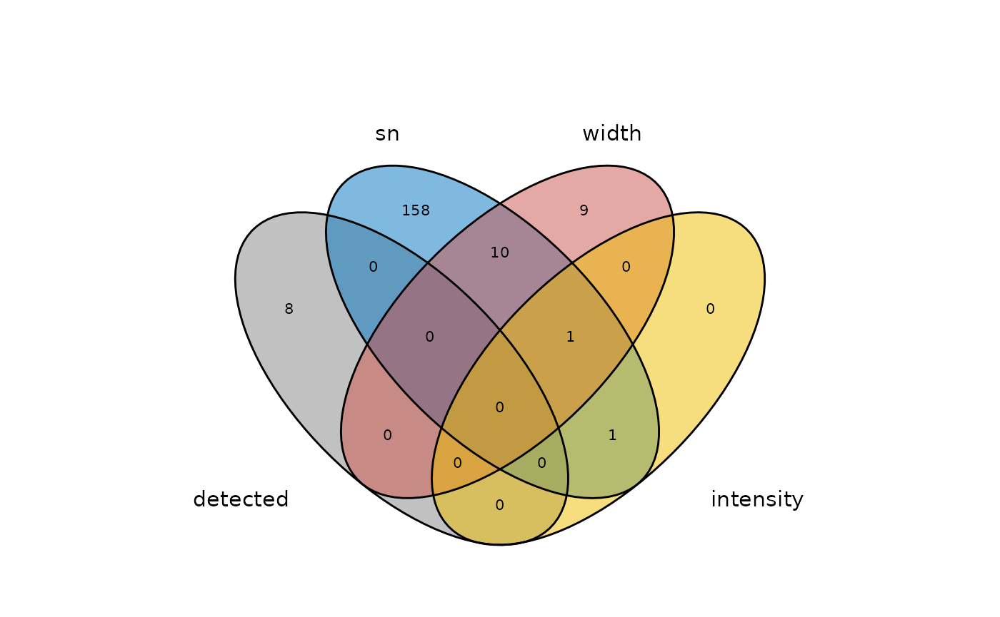
We can see that 8 peaks were not detected at all, ie. did not exhibit the characteristic pattern in the second derivative. Apart from those, the majority of peaks were removed due to their signal-to-noise being too low (SN<10).
# set a seed for sample() to make it reproducible
seed <- 12345
# as an example we will select 2 peaks from each filter outcome
# (1) Not detected as a peak,
# (2) Too low signal-to-noise,
# (3) Too low intensity (only 1 peak here)
# (4) Too narrow
set.seed(seed); randomRemoved <- list(
nd = sample(which(apply(outcomes, 1, function(x) { # (1)
return(!x[1] &
x[2] &
x[3] &
x[4] &
x[5] &
x[6])
})), 2),
lowsn = sample(which(apply(outcomes, 1, function(x) { # (2)
return(x[1] &
!x[2] &
x[3] &
x[4] &
x[5] &
x[6])
})), 2),
lowint = which(apply(outcomes, 1, function(x) { # (3)
return(x[1] &
!x[2] &
x[3] &
x[4] &
x[5] &
!x[6])
})),
toonarrow = sample(which(apply(outcomes, 1, function(x) { # (4)
return(x[1] &
x[2] &
!x[3] &
x[4] &
x[5] &
x[6])
})), 2)
)
randomRemoved
#> $nd
#> CP0661 CP0352
#> 661 352
#>
#> $lowsn
#> CP1033 CP0359
#> 1033 359
#>
#> $lowint
#> CP0245
#> 245
#>
#> $toonarrow
#> CP0906 CP0549
#> 906 549And then we can plot these peaks using the plotPeaks() function. This function takes a cpc object as well as a list of peak IDs as argument. The peak IDs can be supplied as indices in the full peak list (ie. not the filtered peak list) or as a character vector with peak IDs (row names in the peak tables). In the present example they are the same and we can use either the names of randomRemoved or the values.
cpc::plotPeaks(cpc, peakIdx = randomRemoved[[1]])
#> Opening file: /__w/_temp/Library/cpc/extdata/hilic017.mzML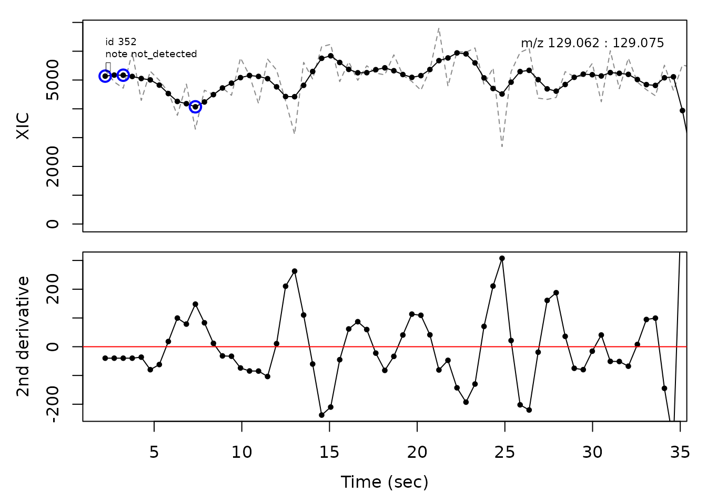
#> Opening file: /__w/_temp/Library/cpc/extdata/hilic019.mzML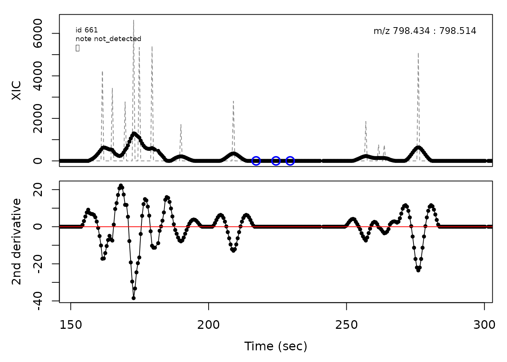
cpc::plotPeaks(cpc, peakIdx = randomRemoved[[2]])
#> Opening file: /__w/_temp/Library/cpc/extdata/hilic017.mzML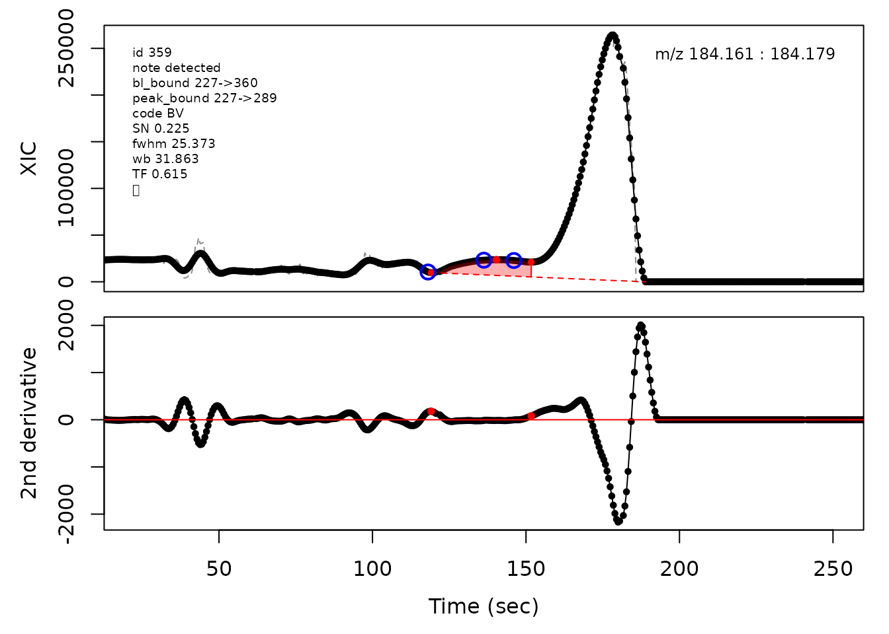
#> Opening file: /__w/_temp/Library/cpc/extdata/hilic021.mzML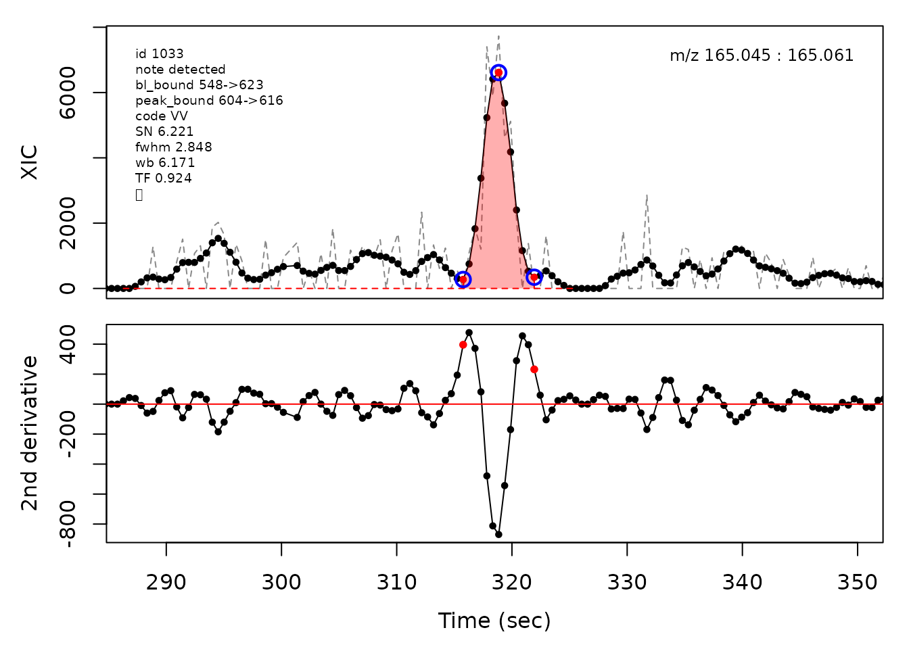
cpc::plotPeaks(cpc, peakIdx = randomRemoved[[3]])
#> Opening file: /__w/_temp/Library/cpc/extdata/hilic015.mzML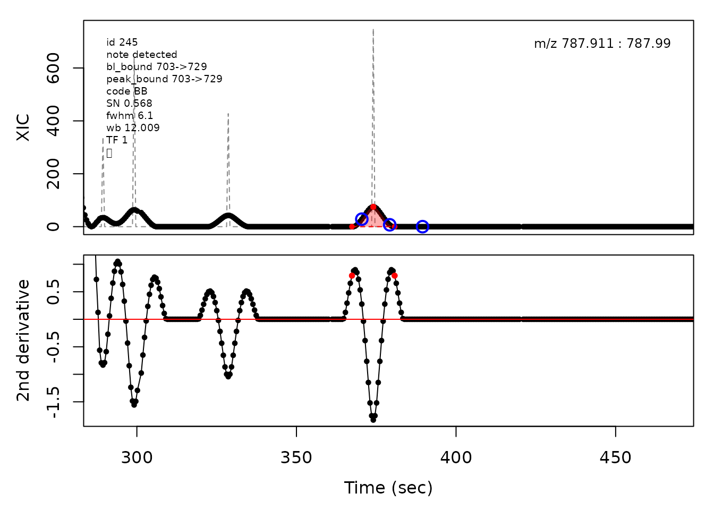
cpc::plotPeaks(cpc, peakIdx = randomRemoved[[4]])
#> Opening file: /__w/_temp/Library/cpc/extdata/hilic017.mzML
#> Opening file: /__w/_temp/Library/cpc/extdata/hilic021.mzML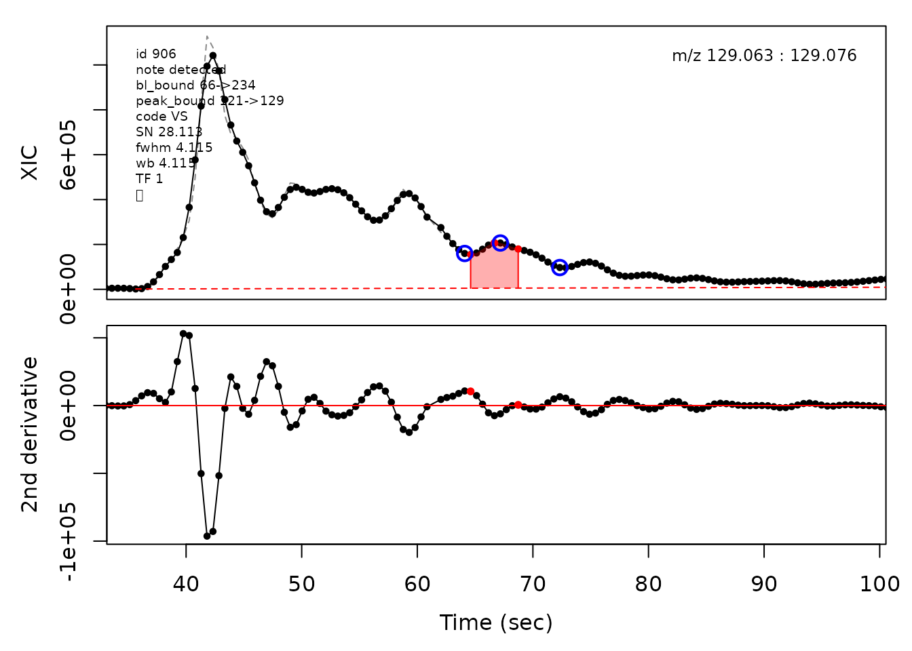
In the above plots the original XIC trace is plotted as a gray dashed line with the smoothed chromatogram overlaid on top in black. The black dots are the actual scan points. The blue circles represent the front boundary, apex location, and tail boundary, as determined by XCMS. The red fill indicates the peak boundaries determined by CPC with the red dot representing the apex point. The red dashed line is the baseline of the peak, as estimated by CPC.
We can also plot some of the retained peaks in the same way. Here we will randomly select one peak from each quartile of the signal-to-noise range.
# get a vector of all detected peaks
allRetainedPeaks <- cpc::getRetainedPeaks(cpc)
allRetainedPeakIdx <- match(allRetainedPeaks, row.names(cpcPeaktable))
# determine the quartile break points
quarts <- quantile(cpcPeaktable$sn[allRetainedPeakIdx])
quarts[1] <- 0 # set the first boundary to be 0
quarts
#> 0% 25% 50% 75% 100%
#> 0.00000 28.49219 64.91197 161.98079 Inf
# randomly select peaks in each quartile
noPeakFromEachQuartile <- 2
# randomly select the specified number of peaks from each quartile
set.seed(seed); randomRetained <- list(
low <- sample(allRetainedPeaks[
cpcPeaktable$sn[allRetainedPeakIdx] >= quarts[1] &
cpcPeaktable$sn[allRetainedPeakIdx] < quarts[2]
], noPeakFromEachQuartile, FALSE), # 0% <= SN < 25%
lowmed <- sample(allRetainedPeaks[
cpcPeaktable$sn[allRetainedPeakIdx] >= quarts[2] &
cpcPeaktable$sn[allRetainedPeakIdx] < quarts[3]
], noPeakFromEachQuartile, FALSE), # 25% <= SN < 50%
medhigh <- sample(allRetainedPeaks[
cpcPeaktable$sn[allRetainedPeakIdx] >= quarts[3] &
cpcPeaktable$sn[allRetainedPeakIdx] < quarts[4]
], noPeakFromEachQuartile, FALSE), # 50% <= SN < 75%
high <- sample(allRetainedPeaks[
cpcPeaktable$sn[allRetainedPeakIdx] >= quarts[4] &
cpcPeaktable$sn[allRetainedPeakIdx] < quarts[5]
], noPeakFromEachQuartile, FALSE)) # 75% <= SN < 100%
randomRetained
#> [[1]]
#> [1] "CP0644" "CP0246"
#>
#> [[2]]
#> [1] "CP1018" "CP1072"
#>
#> [[3]]
#> [1] "CP1048" "CP0709"
#>
#> [[4]]
#> [1] "CP0253" "CP0470"And then we can plot all these peaks in the same way as with the removed peaks.
cpc::plotPeaks(cpc, peakIdx = randomRetained[[1]])
#> Opening file: /__w/_temp/Library/cpc/extdata/hilic015.mzML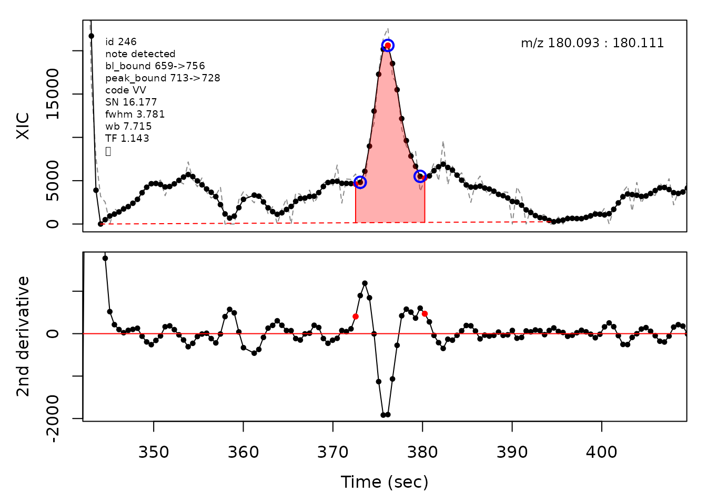
#> Opening file: /__w/_temp/Library/cpc/extdata/hilic019.mzML
cpc::plotPeaks(cpc, peakIdx = randomRetained[[2]])
#> Opening file: /__w/_temp/Library/cpc/extdata/hilic021.mzML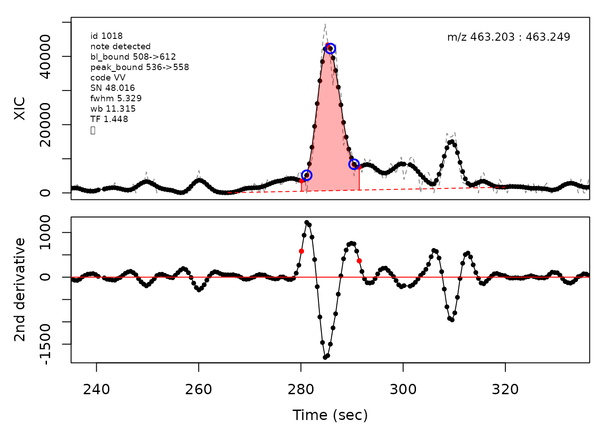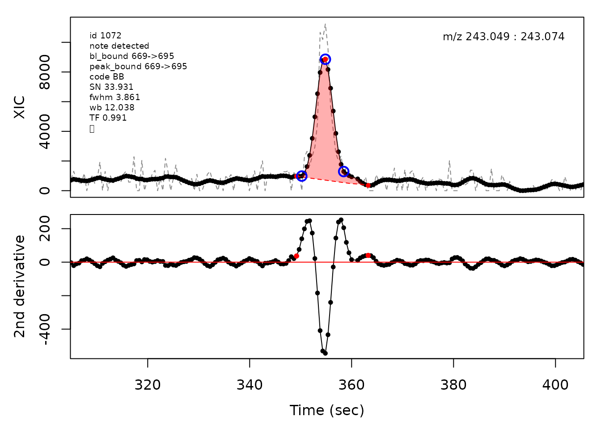
cpc::plotPeaks(cpc, peakIdx = randomRetained[[3]])
#> Opening file: /__w/_temp/Library/cpc/extdata/hilic019.mzML#> Opening file: /__w/_temp/Library/cpc/extdata/hilic021.mzML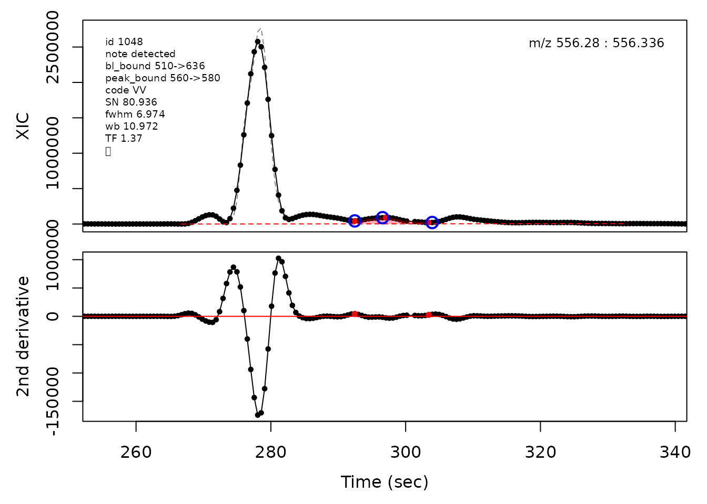
cpc::plotPeaks(cpc, peakIdx = randomRetained[[4]])
#> Opening file: /__w/_temp/Library/cpc/extdata/hilic015.mzML#> Opening file: /__w/_temp/Library/cpc/extdata/hilic017.mzML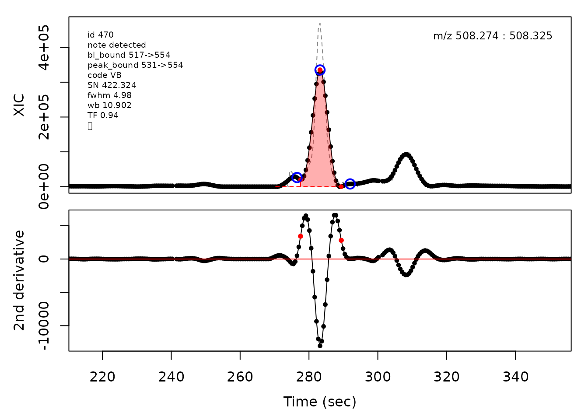
# get a vector of all removed peak numeric IDs
removedPeaksIdx <- match(cpc::getRemovedPeaks(cpc), row.names(cpcPeaktable))
snVals <- cpcPeaktable$sn
snVals[which(snVals == Inf)] <- max(snVals[which(snVals != Inf)])*2
quanBreaks <- quantile(snVals, probs = seq(0,1,length.out = 17))
quanBreaks[1] <- 0
colPalette <- colorRampPalette(colors = c("#264653", "#2A9D8F", "#E9C46A",
"#F4A261", "#E76F51"))(16)
colVec <- colPalette[as.integer(sapply(snVals, FUN = function(x) {
which(quanBreaks[1:(length(quanBreaks)-1)] < x &
quanBreaks[2:length(quanBreaks)] >= x)
}))]
# m/z ~ rt (xcms data) with separate panels for retained and removed peaks
layout(mat = matrix(c(1,2), nrow = 1), widths = c(0.53,0.47))
par(mar = c(5.1,4.1,2.1,0.1))
plot(x = xcmsPeaktableOrig$rt[-removedPeaksIdx],
y = xcmsPeaktableOrig$mz[-removedPeaksIdx], pch = 20,
col = colVec[-removedPeaksIdx],
cex = log(pmax(0, xcmsPeaktableOrig$into[-removedPeaksIdx]) /
median(pmax(0, xcmsPeaktableOrig$into[-removedPeaksIdx]))),
xlab = "Retention time (sec)", ylab = "m/z", main = "Retained peaks")
par(mar = c(5.1,0,2.1,2.1))
plot(x = xcmsPeaktableOrig$rt[removedPeaksIdx],
y = xcmsPeaktableOrig$mz[removedPeaksIdx], pch = 20,
col = colVec[removedPeaksIdx],
cex = log(pmax(0, xcmsPeaktableOrig$into[removedPeaksIdx]) /
median(pmax(0, xcmsPeaktableOrig$into[removedPeaksIdx]))),
xlab = "Retention time (sec)", yaxt = "n", ylab = "", main = "Removed peaks")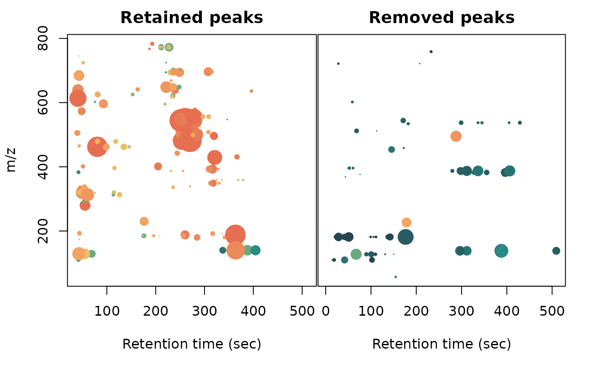
# m/z ~ rt (cpc data) with separate panels for retained and removed peaks
layout(mat = matrix(c(1,2), nrow = 1), widths = c(0.53,0.47))
par(mar = c(5.1,4.1,2.1,0.1))
plot(x = cpcPeaktable$rt[-removedPeaksIdx],
y = xcmsPeaktableOrig$mz[-removedPeaksIdx], pch = 20,
col = colVec[-removedPeaksIdx],
cex = log(pmax(0, cpcPeaktable$area[-removedPeaksIdx]) /
median(pmax(0, cpcPeaktable$area[-removedPeaksIdx]))),
xlab = "Retention time (sec)", ylab = "m/z", main = "Retained peaks")
par(mar = c(5.1,0,2.1,2.1))
plot(x = cpcPeaktable$rt[removedPeaksIdx],
y = xcmsPeaktableOrig$mz[removedPeaksIdx], pch = 20,
col = colVec[removedPeaksIdx],
cex = log(pmax(0, cpcPeaktable$area[removedPeaksIdx]) /
median(pmax(0, cpcPeaktable$area[removedPeaksIdx]))),
xlab = "Retention time (sec)", yaxt = "n", ylab = "", main = "Removed peaks")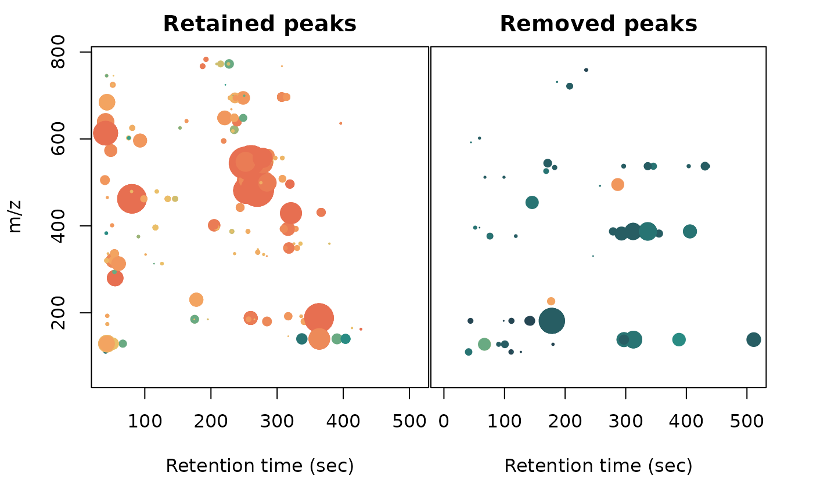
Peak cluster boundaries
Overlapping peak clusters can be detected by the algorithm as their baseline boundaries after expansion will overlap. Consequently the boundaries between peaks in clusters need to be determined and updated. This is handled differently depending on the degree of overlap. Valley boundaries between peaks are set to the lowest point between the peak apices along the ion trace. Shoulder boundaries are set to the maxima between the peak apices along the second derivative of the ion trace. When two similarily sized peaks overlap sufficiently much, it can lead to a rounded peak shape. This is detected as two peak apices that share inflection points along the second derivative which a negative valued maxima in between the apice points. The boundary is then set to the negative maxima point between the apices.
# Valley boundary example
cpc::plotPeaks(cpc, 931)
#> Opening file: /__w/_temp/Library/cpc/extdata/hilic021.mzML
# Shoulder boundary example
cpc::plotPeaks(cpc, 500)
#> Opening file: /__w/_temp/Library/cpc/extdata/hilic017.mzML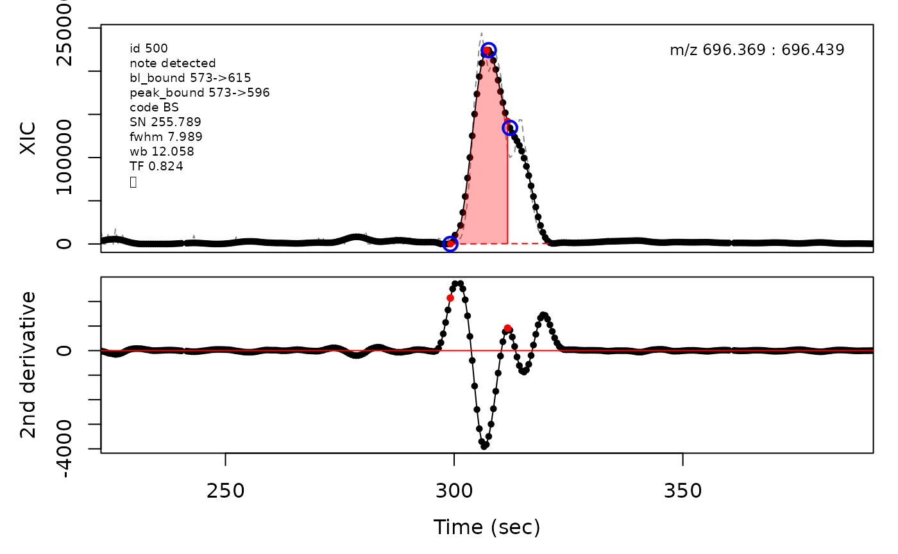
Example of EMG deconvolution
The processing engine used in the CPC package includes EMG deconvolution of peak clusters to achieve better estimates of the peak boundaries. This can be included in the processing by setting the argument fit_emg = TRUE in the cpcProcParam object.
To illustrate this, we first need to find a few peaks to perform EMG deconvolution on.
(selection <- c(34, 138, 106, 165, 179, 217))
#> [1] 34 138 106 165 179 217
(peakIdx <- row.names(cpcPeaktable[selection, ]))
#> [1] "CP0034" "CP0138" "CP0106" "CP0165" "CP0179" "CP0217"
(selection <- cpcPeaktable$id[selection])
#> [1] 34 138 106 165 179 217
cpc::plotPeaks(cpc, peakIdx = selection)
#> Opening file: /__w/_temp/Library/cpc/extdata/hilic015.mzML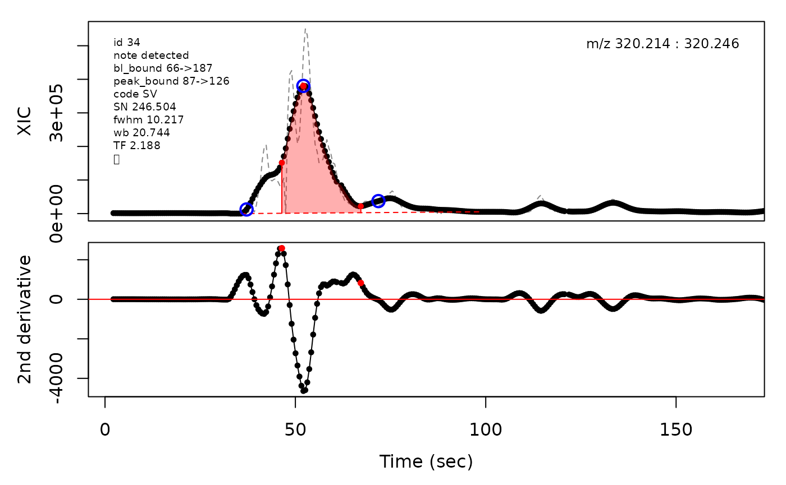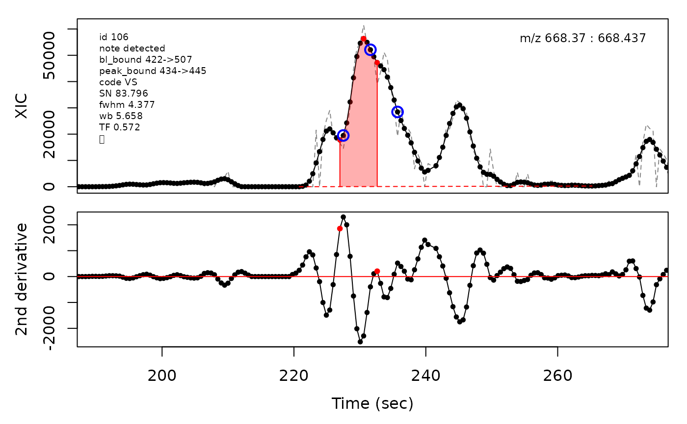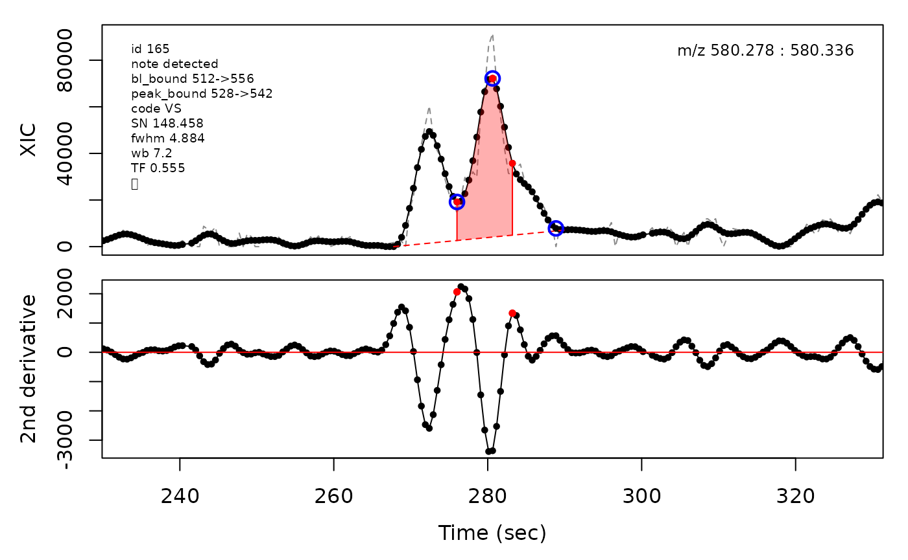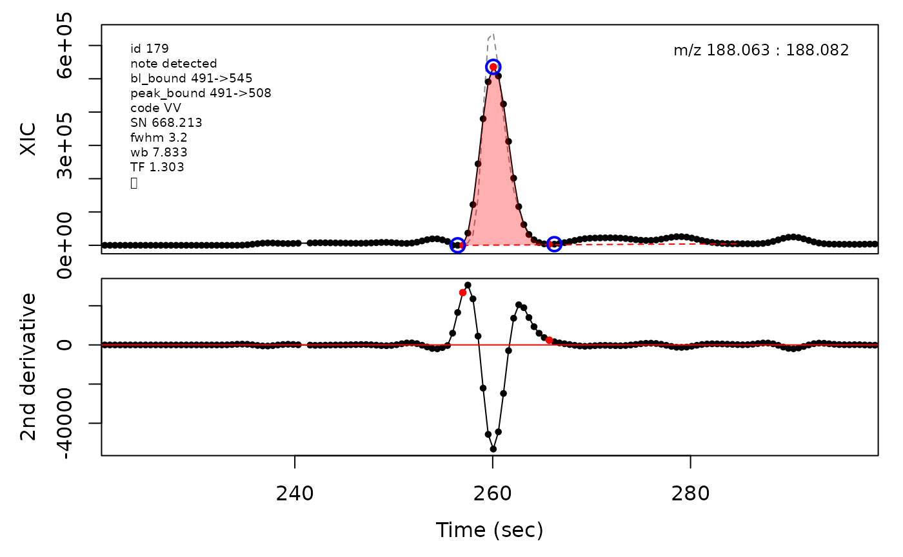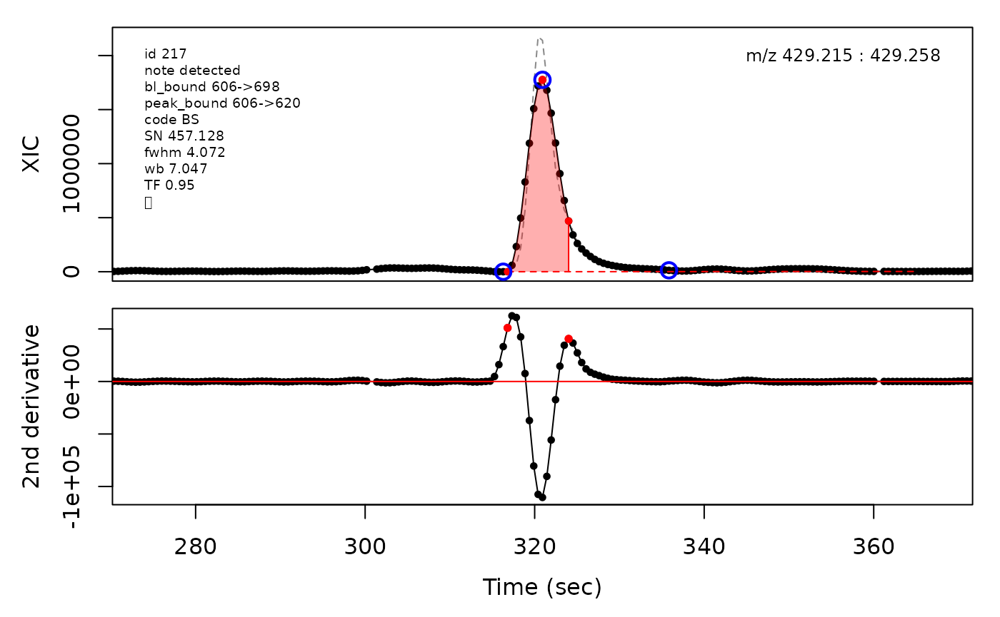
cpcParam <- cpc::cpcProcParam(fit_emg = TRUE, sel_peaks = selection, plot = F,
save_all = TRUE)
cpcDeconv <- cpc::characterize_xcms_peaklist(xd = xd, param = cpcParam)
#> Processing file: /__w/_temp/Library/cpc/extdata/hilic015.mzML
#> Found 6 peak(s).
#> Finished in 0.547 secs.
cpc::plotPeaks(cpc = cpcDeconv, peakIdx = peakIdx, plotEMG = T)
#> Opening file: /__w/_temp/Library/cpc/extdata/hilic015.mzML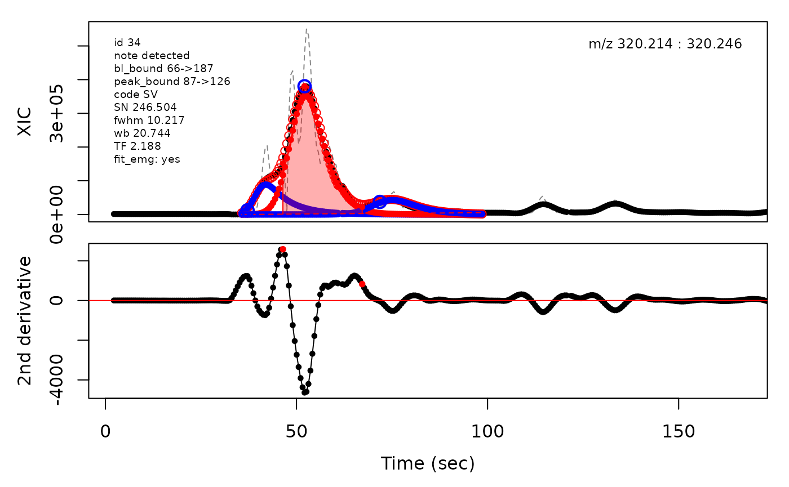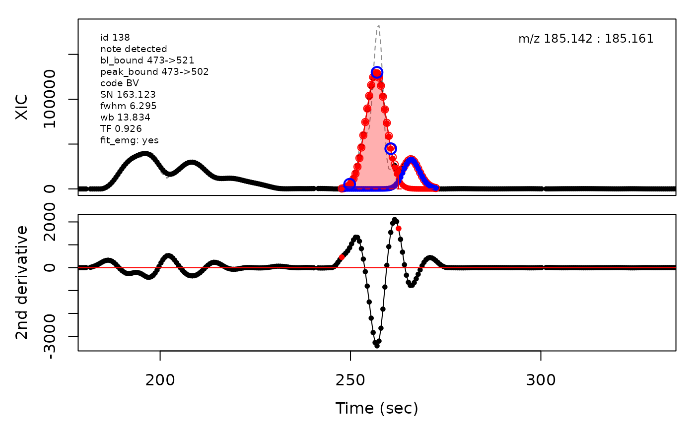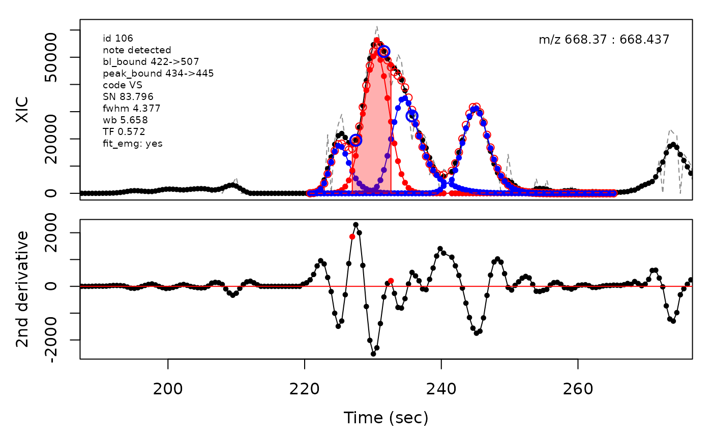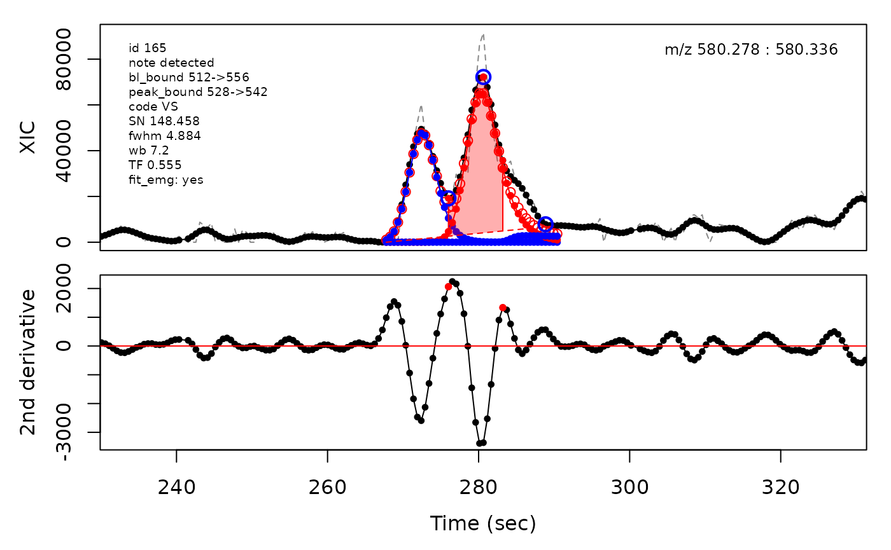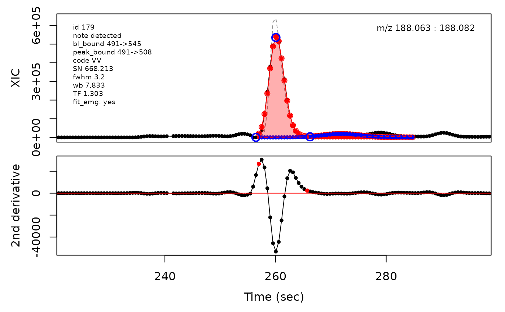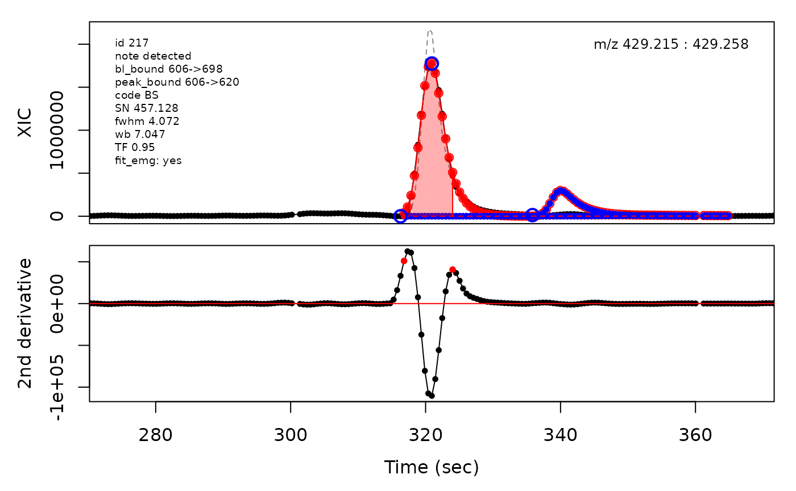
Session info
sessionInfo()
#> R version 4.1.3 (2022-03-10)
#> Platform: x86_64-pc-linux-gnu (64-bit)
#> Running under: Ubuntu 20.04.4 LTS
#>
#> Matrix products: default
#> BLAS/LAPACK: /usr/lib/x86_64-linux-gnu/openblas-pthread/libopenblasp-r0.3.8.so
#>
#> locale:
#> [1] LC_CTYPE=en_US.UTF-8 LC_NUMERIC=C
#> [3] LC_TIME=en_US.UTF-8 LC_COLLATE=en_US.UTF-8
#> [5] LC_MONETARY=en_US.UTF-8 LC_MESSAGES=en_US.UTF-8
#> [7] LC_PAPER=en_US.UTF-8 LC_NAME=C
#> [9] LC_ADDRESS=C LC_TELEPHONE=C
#> [11] LC_MEASUREMENT=en_US.UTF-8 LC_IDENTIFICATION=C
#>
#> attached base packages:
#> [1] grid stats4 stats graphics grDevices utils datasets
#> [8] methods base
#>
#> other attached packages:
#> [1] ggvenn_0.1.9 ggplot2_3.3.6 dplyr_1.0.9
#> [4] cpc_0.1.0 signal_0.7-7 xcms_3.16.1
#> [7] MSnbase_2.20.4 ProtGenerics_1.26.0 S4Vectors_0.32.4
#> [10] mzR_2.28.0 Rcpp_1.0.8.3 Biobase_2.54.0
#> [13] BiocGenerics_0.40.0 BiocParallel_1.28.3 pander_0.6.5
#>
#> loaded via a namespace (and not attached):
#> [1] bitops_1.0-7 matrixStats_0.62.0
#> [3] fs_1.5.2 progress_1.2.2
#> [5] doParallel_1.0.17 RColorBrewer_1.1-3
#> [7] rprojroot_2.0.3 GenomeInfoDb_1.30.1
#> [9] tools_4.1.3 bslib_0.3.1
#> [11] utf8_1.2.2 R6_2.5.1
#> [13] affyio_1.64.0 colorspace_2.0-3
#> [15] withr_2.5.0 prettyunits_1.1.1
#> [17] tidyselect_1.1.2 MassSpecWavelet_1.60.1
#> [19] compiler_4.1.3 preprocessCore_1.56.0
#> [21] textshaping_0.3.6 cli_3.3.0
#> [23] DelayedArray_0.20.0 desc_1.4.1
#> [25] labeling_0.4.2 sass_0.4.1
#> [27] scales_1.2.0 DEoptimR_1.0-11
#> [29] robustbase_0.95-0 affy_1.72.0
#> [31] pkgdown_2.0.3.9000 systemfonts_1.0.4
#> [33] stringr_1.4.0 digest_0.6.29
#> [35] rmarkdown_2.14 XVector_0.34.0
#> [37] pkgconfig_2.0.3 htmltools_0.5.2
#> [39] MatrixGenerics_1.6.0 highr_0.9
#> [41] fastmap_1.1.0 limma_3.50.3
#> [43] rlang_1.0.2 impute_1.68.0
#> [45] farver_2.1.0 jquerylib_0.1.4
#> [47] generics_0.1.2 jsonlite_1.8.0
#> [49] mzID_1.32.0 RCurl_1.98-1.6
#> [51] magrittr_2.0.3 GenomeInfoDbData_1.2.7
#> [53] Matrix_1.4-1 MALDIquant_1.21
#> [55] munsell_0.5.0 fansi_1.0.3
#> [57] MsCoreUtils_1.6.2 lifecycle_1.0.1
#> [59] vsn_3.62.0 stringi_1.7.6
#> [61] yaml_2.3.5 MASS_7.3-57
#> [63] SummarizedExperiment_1.24.0 zlibbioc_1.40.0
#> [65] plyr_1.8.7 parallel_4.1.3
#> [67] crayon_1.5.1 lattice_0.20-45
#> [69] MsFeatures_1.2.0 hms_1.1.1
#> [71] knitr_1.39 pillar_1.7.0
#> [73] GenomicRanges_1.46.1 codetools_0.2-18
#> [75] XML_3.99-0.9 glue_1.6.2
#> [77] evaluate_0.15 pcaMethods_1.86.0
#> [79] BiocManager_1.30.17 vctrs_0.4.1
#> [81] foreach_1.5.2 RANN_2.6.1
#> [83] gtable_0.3.0 purrr_0.3.4
#> [85] clue_0.3-60 cachem_1.0.6
#> [87] xfun_0.31 ragg_1.2.2
#> [89] ncdf4_1.19 snow_0.4-4
#> [91] tibble_3.1.7 iterators_1.0.14
#> [93] memoise_2.0.1 IRanges_2.28.0
#> [95] cluster_2.1.3 ellipsis_0.3.2